Who it is for
Artists and small teams making a generative set or a photo batch, who want the edit and the drop in the same place.
Influencer brief · November 2026
NFT Creative Studio is one workspace for the edit, the trait stack, the rarity rules, the metadata, and the export. Invalid combinations are blocked while the collection is planned, not after a thousand files have been rendered.
A local studio for artists. These pages are the product as it runs today. The sample project is Signal Portraits.
How to talk about it
Artists and small teams making a generative set or a photo batch, who want the edit and the drop in the same place.
It does not deploy a contract and it does not take payment. Switching plans is a local stand-in for billing. Image work that needs a model uses an optional worker you point it at.
Say “studio” or “workspace.” The product composites trait layers. It is not a hosted image model unless the artist connects one.
Home
The opening line, the sample collection, and the two ways in: start a project, or open the demo.
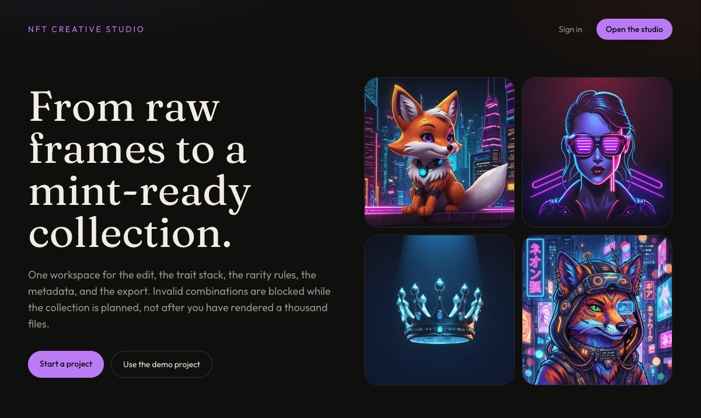
Home. Four sample frames sit beside the headline.
Home
Five steps from a new project to the export, then the six areas of the studio.
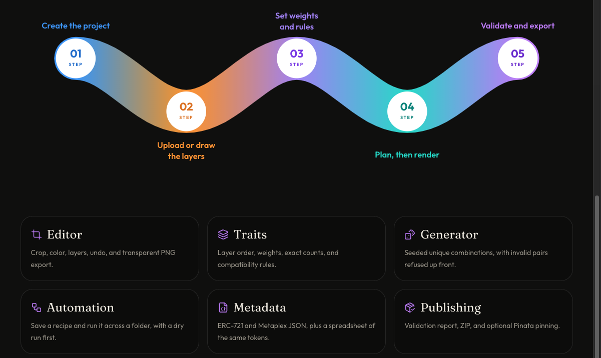
Create the project, upload layers, set weights and rules, plan then render, validate and export.
Studio
An artist can keep more than one collection. The demo account already holds Signal Portraits, a generative set with 28 files.
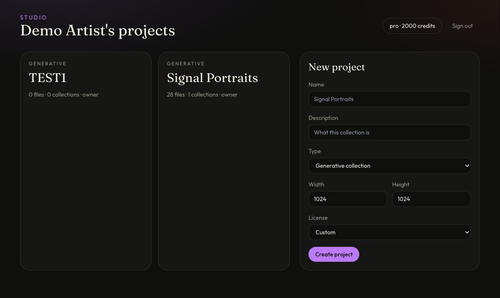
Projects. A new collection takes a name, a type, a canvas size, and a license.
Overview
Signal Portraits shows where the drop stands: thirteen steps from the project itself through marketplace prep. Roles, notes, and the people on the project live on the same page.
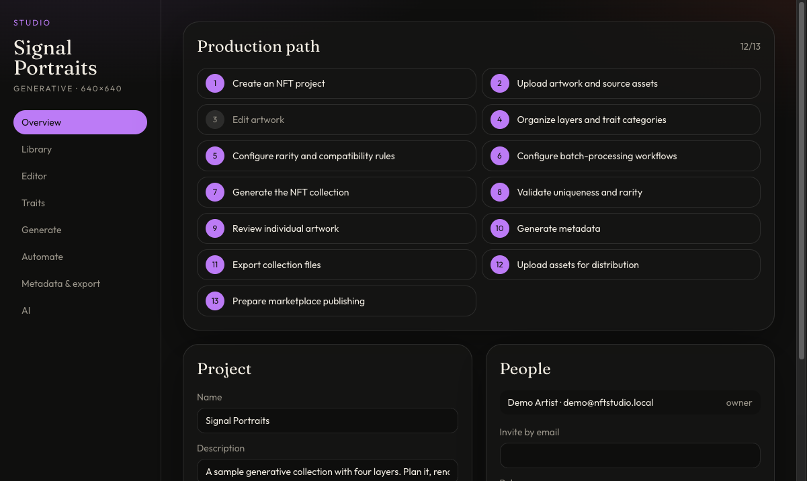
Overview. Completed steps are marked. The rest stay open until the work is done.
Library
Artwork is uploaded, hashed, and kept. The same file is never overwritten. Thumbnails are what the rest of the studio reads from.
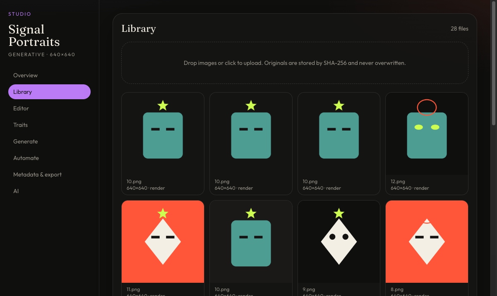
Library. Signal Portraits keeps backgrounds, figures, eyes, and marks as separate files.
Traits
Bottom layers render first. Drag to reorder. A weight is a chance. An exact count, set on every trait in a layer, is a promise.
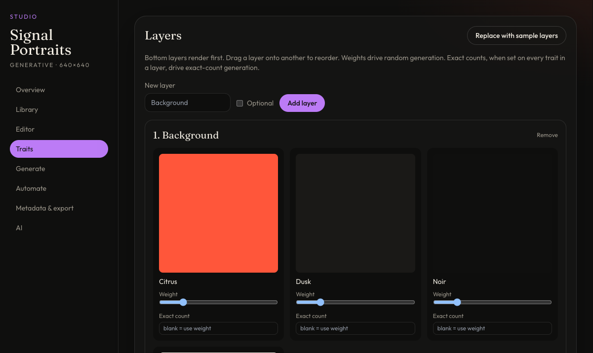
Traits. Backgrounds in the sample set: Citrus, Dusk, and Noir.
Editor
Pick a file, adjust it on the canvas, and save a version on the server so the file matches the recipe. Undo and redo stay with the edit.
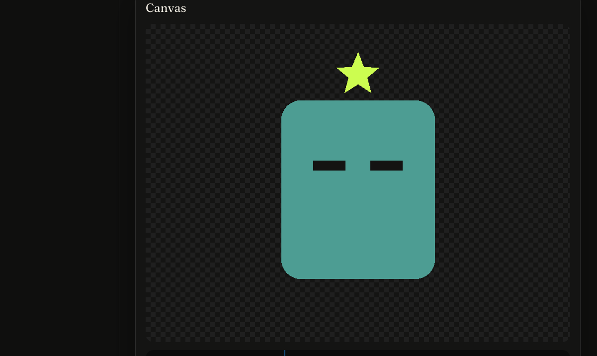
Editor canvas. The selected trait sits on a checkerboard so a transparent edge stays visible.
Generate
Supply, seed, and schema are set before a single image is written. Rarity is shown against the target so a layer that drifted is visible.
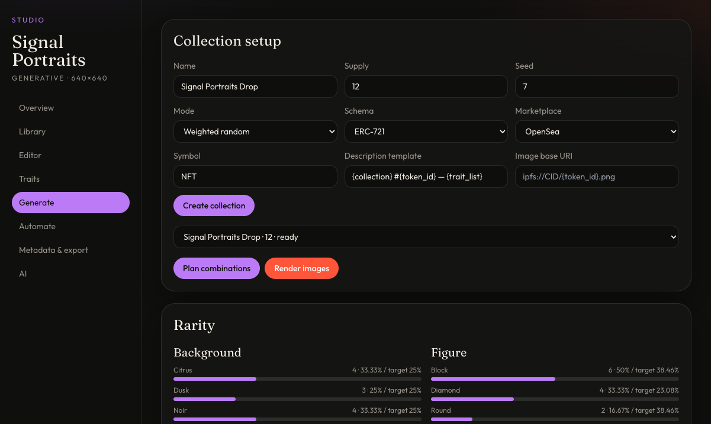
Generate. Signal Portraits Drop is a 12-token ERC-721 set, seed 7, aimed at OpenSea.
Automate
Resize, sharpen, change format, rename. Save the recipe, dry-run it, then run the batch. The same recipe on the same files does the same work.
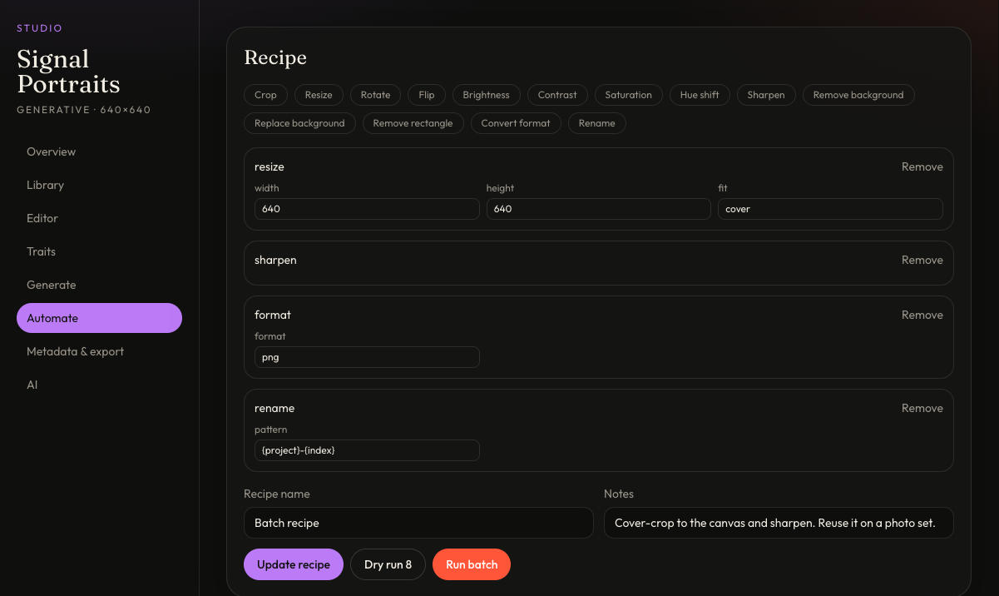
Automate. This recipe cover-crops to 640 and writes PNG files named from the project and the index.
Metadata and export
Each token has a name, an image address, and the traits that built it. The same table downloads as CSV. The ZIP adds images, JSON, provenance, and the validation report.
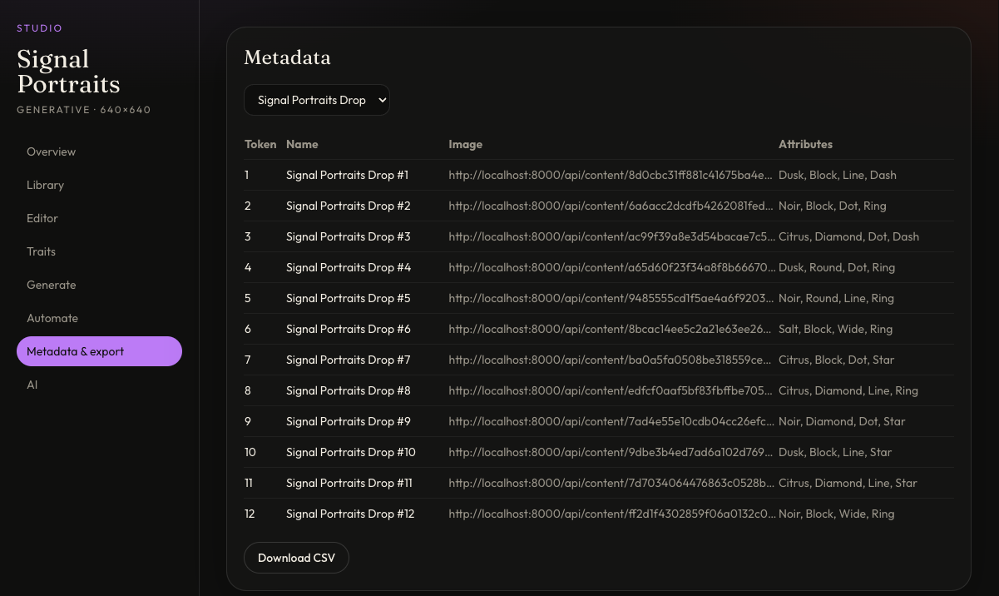
Metadata. Token 1 is Dusk, Block, Line, Dash. The export also offers a ZIP and an optional Pinata upload.
AI
Corner background removal runs in the studio. A connected worker can take the harder cutout. Enhance, a corner fill, and variations are on the same screen.
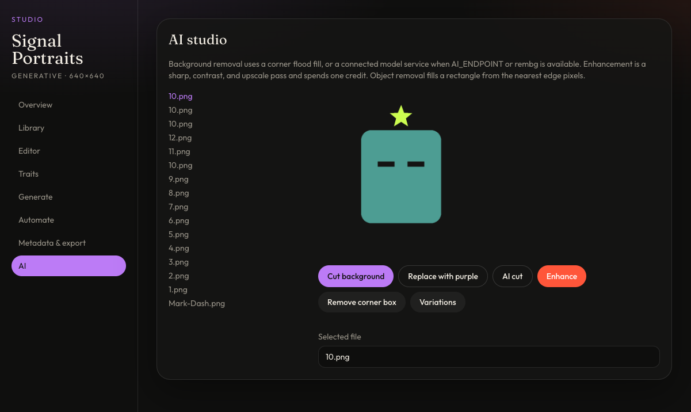
AI studio. Optional. A remote model is used only when one is configured.
Try the demo
demo@nftstudio.local
demo-studio-123
The project list, then Signal Portraits. Plan the collection, render it, then download the ZIP.
The studio runs locally: the site on port 3000, the API on port 8000. These screenshots were taken there. There is no public deployment in this brief.
Please don’t describe it as a mint button, a marketplace, or a model that draws the artwork from a prompt. It edits, stacks, generates unique combinations, checks the drop, and exports the files.
NFT Creative Studio · influencer brief · November 2026